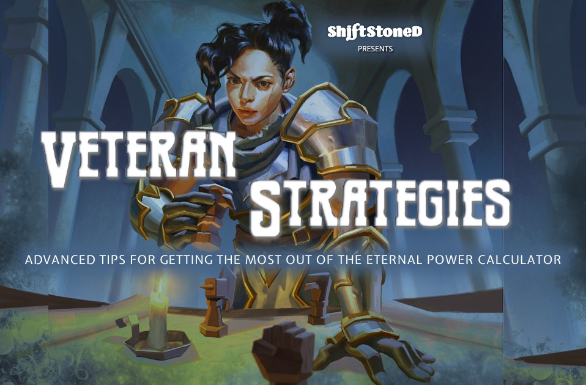
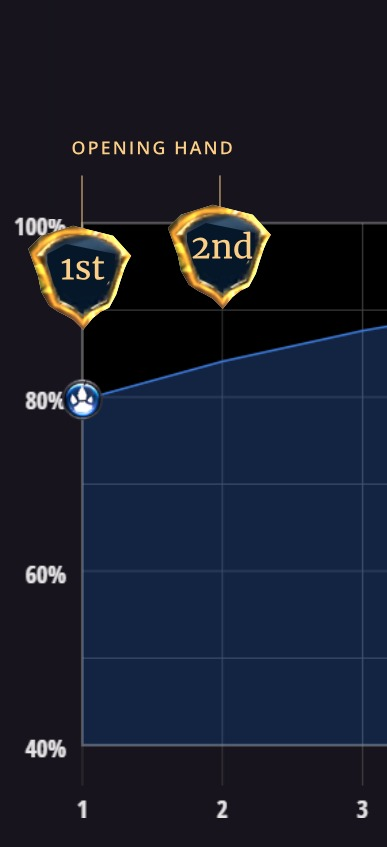

Veteran Strategies:
Advanced tips for getting the most out of the Eternal Power Calculator
Beyond the basics, a deeper understanding of Eternal's rules for draws, Power and Influence will give you a deck-building advantage
Take a closer look at how starting order, mulligans, and Wild Cards can impact your Power base

Import your deck into the Eternal Power Calculator for an instant snapshot of how your Power base will perform in a game of Eternal. Add or remove cards from the list and you will immediately see the impact of these changes on the fly.
Once you have mastered these basic concepts, you will gain an even better understanding of your brews by considering the specific rules of Power, Influence and draws in Eternal Card Game and how they shape probabilities.
On the Play or On the Draw?
Your odds of holding Power and Influence increase
when you go second

The user’s guide to the Eternal Power Calculator describes the value of thinking in terms of draws rather than turns. One of the most obvious applications of this concept occurs before you have even seen your first card. Are you going first or are you going second?
The values in Column 1 of the both the Influence Chart and the Power Odds Table represent your first turn if you are “on the play” (going first). Players “on the draw” (going second) receive an additional card draw as part of their opening hand.
If you want a better indication of how your Power base will perform when going second, simply skip to Column 2 and observe that your odds of holding Power and Influence increase. This is compensation for the disadvantage presented when your opponent takes a turn before you.
You can use the same principle to account for extra draws from any effect in the game, such as things like Nightfall or Teacher of Humility's Infiltrate ability.
Eternal’s rules for redraws (aka Mulligans)
Your odds of holding Power and Influence increase when you redraw your opening hand
At the start of each game, both players are given an option to either keep or redraw the cards they have been dealt in what is commonly referred to as the “mulligan” phase.
Eternal’s mulligan rules ensure that you have an equal chance of holding two, three or four Power cards after redrawing. This mechanic was introduced to mitigate Power shortages and floods.
It is important to note that your odds of holding Power and Influence in your opening hand will never be lower than what is displayed on the Eternal Power Calculator. However - if you decide to redraw - your chances of drawing Power and Influence may increase.
There are a number of factors that determine how much of an increase occurs. (You can read more about them here). But it helps to keep in mind that the range of drawing your Power and Influence sources relative to each other remains unchanged.
In other words: if you have constructed your Power base to prioritize  on Turn 1 or
on Turn 1 or  on Turn 2, these priorities will remain proportionally consistent regardless of your mulligan choices.
on Turn 2, these priorities will remain proportionally consistent regardless of your mulligan choices.
There are a lot of considerations other than Power which contribute to a decision about whether or not to redraw your opening hand. But if you frequently mulligan, you may observe that your Power base performs slightly better than the snapshot displayed by the Eternal Power Calculator. Fortunately you can be confident that it will not perform any worse due to Eternal’s redraw rules.
Wild Cards
Your odds of holding Influence (but not Power) will both increase and decrease when using Wild Cards
A handful of Power sources in Eternal behave very differently from the rest by granting you an Influence of your choice. The Power Calculator treats these cards as Wild Cards.
Wild Cards factor in to the Influence probabilities, and are included in the overall Power source counts. However when you use a Wild Card to gain Influence in one faction, your total number of potential Influence sources in the other factions will be reduced.
Wild Cards are useful for certain strategies. But when using them, it helps to keep in mind that they slightly alter the probabilities represented by the Power Calculator.
A useful technique for visualizing the impact of Wild Cards is to make a comparison between two nearly identical decks: In the first deck include your Wild Cards. In the second, replace the Wild Cards with a comparable card that does not grant Influence. (Some examples are provided here).
This will give you a clear indication of the difference between the floor and the ceiling of how your Power base will perform with Wild Cards.
Final Thoughts
The immediate visualization displayed by the Eternal Power Calculator provides an overall representation of how your deck’s Power base will perform game after game. Understanding the subtleties of Eternal’s special rules and exceptions will maximize the value you can gain from it.
The concepts introduced here are some of the more common in-game conditions and situations that may shape probabilities. If you have any questions, or would like to see a particular topic explored in a future article, please get in touch.